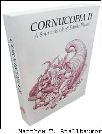
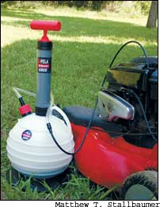
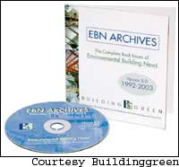
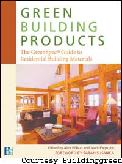

Farm-fresh, organic foods - pesticide- and preservative-free - are the preferred choice for many of us. But when unsprayed, unprocessed and untreated foods aren’t available, selecting among the alternatives requires careful thinking. There are dozens of additives in processed foods, and it’s tough to know which ones are harmless and which ones to avoid. Just last summer, the results of a British study suggested that the common preservative sodium benzoate and certain common artificial colorings warrant further investigation for their possible effects on increased hyperactivity in small children.
In the British study, the children were put on a diet that eliminated the preservatives and additives. The study, published in the June 2004 issue of Archives of Disease in Childhood, found parents reported “significant reductions in hyperactive behavior during the withdrawal phase,” although these results were not confirmed when the children were given objective, clinical tests. So, are these compounds, which have been approved by the U.S. Food and Drug Administration (FDA), truly safe, or should they be avoided?
In the United States, nothing can be added to a food without the FDA’s approval. For an additive to be included in a food, the FDA must determine it is “generally recognized as safe.” But most testing involves limited periods of time under controlled conditions (the British test lasted one month) and, usually, the tests are on animals, not humans. In addition, testing doesn’t account for individual sensitivities or the possible subtle impacts of a lifetime of ingesting chemical additives, especially in combination. (See below, “How to Read a Study.”) Also, testing doesn’t always consider variations in body size and metabolism, such as with children.
Several food dyes, additives and sweeteners have been banned long after passing FDA review, and the safety of a number of additives over long periods of usage also has been questioned by researchers. In fact, it’s hard to find an additive that has not been investigated as a potential carcinogen. Scientific literature going back decades shows that for nearly every study implicating certain preservatives and additives in some adverse health effect, another study that showed the opposite results can be found.
Not all additives are evil. A number of preservatives, used in foods to control spoilage and microbial growth, actually may increase their healthfulness. Take tocopherol, for example. Also known as vitamin E, it’s added as an antioxidant to keep food from spoiling, but studies have found vitamin E may protect against cardiovascular disease and cancer. Some food colorings derived from vegetables - for example, beta carotene for yellow and orange; anthocyanins from grapes or beets for reds - are known to protect against cancer and heart disease, too.
In the long run, it is unlikely that even the most suspect additives pose any immediate and significant danger, although the British study is a reminder that children’s reactions can differ from adults’. The main question is whether you are willing to accept the possible risk, however remote, that future science will establish clear links between a particular additive and increased cancer or other disease risk. So, given the choice - with fresh, organic, high-quality foods now more available than ever - it just makes sense to opt for the fresh, organic, additive-free versions as often as you can.
- David Feder
Marin County, Calif., bans GE
Marin County, Calif., voted last fall to prohibit the cultivation of genetically engineered (GE) crops, and became the third county in the state with such a ban. Mendocino and Trinity counties had passed similar measures earlier. Arcata, Calif., became the first city in the United States to ban GE crops on Nov. 17, 2004. Measures in three other California counties, Humboldt, San Luis Obispo and Butte, failed on last Election Day. Many other groups across the country continue to organize GE-free initiatives.
Hemp Food Fight Over
The three-year legal battle between the Drug Enforcement Administration (DEA) and the hemp food industry is finally over. In February 2004, an appeals court ruled that hemp fiber, seed and oil are rightfully exempt from the Controlled Substances Act, protecting the sale and consumption of hemp food products in the United States. The DEA chose not to appeal the decision to the Supreme Court. “Removing the cloud the DEA put into the marketplace will spur a dramatic surge in the supply and consumption of healthy omega-3-rich hemp seed in America,” says David Bronner, chair of the food and oil committee for the Hemp Industries Association.
Underwater Turbines
New York City’s East River is the site of a new tidal-power plant. Virginia-based Verdant Power installed six underwater turbines attached to concrete piles at the bottom of the tidal basin last September. The units work like windmills underwater, using the daily motion of the tides to produce electricity. They will supply power for about 200 homes, but are part of a larger 10-megawatt power project that will eventually include 300 turbines. Columbia University and Green Mountain Energy have expressed willingness to buy power from the power plant, which the company expects to complete within four years.
Except where noted, Green Gazette is written by Umut Newbury.
How to Read a Study
When you encounter a study that declares something constitutes a health risk, here’s how to evaluate it:
• Look to the source. Who funded the study? A link between the compound studied and the company that produces it should wave a red flag.
• Look at the species studied. Results from tests using humans are more significant than tests on rats or mice. Check the number of subjects and amounts of the investigated compound that were fed to them. A study in which 19 rats develop cancer after being daily fed 10 times their body weight of Preservative X can hardly be considered applicable to the 1 milligram in the bag of chips you indulge in once a week.
• Finally, always bear in mind that a single study does not equal an absolute truth.
A Great Guidebook to the Global Garden
Nearly 20 years ago, while working in a tropical fruit nursery, Steve Facciola felt frustrated at the difficulty of finding unusual plants he wanted to grow. First he began collecting catalogs, and then he started putting those catalogs together into a comprehensive list of plants, keyed to the suppliers that offered them for sale.
The remarkable result is the massive 700-page Cornucopia: A Source Book of Edible Plants, which he self-published in 1990, and updated as Cornucopia II in 1998. From ‘Elephant’s Trunk’ amaranth to hardy Russian kiwis to 236 tomato varieties, Cornucopia II is the most complete listing available of descriptions and sources of edible plants in cultivation today.
Facciola describes himself as an eccentric with compulsive tendencies, which are probably necessary characteristics for the task of sorting and describing tens of thousands of food plants from every corner of the world. “There is a tremendous amount of diversity out there,” Facciola says. “If people don’t find it and use it, it will disappear. I try to educate people along those lines, to help them discover the amazing things they can grow.”
It’s a huge undertaking and a phenomenal accomplishment. In addition to scouring seed and nursery catalogs, Facciola visits farms, farmer’s markets and ethnic markets from New York to California, where he continues to discover unique and valuable food plants. Then he looks for sources that can supply them. A plant must be widely available before Facciola considers it a keeper, and he’s always delighted to find good open-pollinated varieties as well as interesting, worthwhile hybrids.
Many of the listings in Cornucopia II are familiar to longtime gardeners, and the book removes the hassle of finding once-popular varieties such as ‘Belle of Georgia’ peach or ‘Daisy’ peas. And, as tempting as it is to get lost among melons or mulberries, the first half of the book follows the path to diversity in a completely different way, by listing plants according to botanical family. It is within these pages that you might learn about grapefruit sage (“red, tubular flowers are excellent eaten out of hand … sweet, melting and filled with nectar”) or decide to try pickled redbud buds, which resemble colorful capers. Even edible mushrooms and starter cultures for cheese are included.
Cornucopia II reminds us of just how limited our food choices often are, and at the same time provides inspiration, information and sources for food-minded gardeners. This is precisely what Facciola hopes results from his labor of love, which has produced only modest financial returns. Now in his mid-50s, Facciola says he’s committed to completing a third edition to further expand the world’s palate and enrich the world’s gardens.
To order Cornucopia II, see Mother’s Bookshelf. - Barbara Pleasant
Lawn mowers, tillers and other power equipment with engines all need oil changes as a part of their routine maintenance. This task usually involves removing drain plugs, which can lead to messy spills, and many of us tend to skip the task just to avoid the hassle. But, poorly maintained engines lead to premature wear and higher pollution.
North Carolina-based Pela Products has released an oil extractor, PELA 2000, designed specifically for small jobs on the homestead. A compact, manually operated vacuum pump, PELA 2000 sucks out the old oil from small engines.
It’s affordable ($29.95), and we found it quick and easy to use - drop the tube down the dipstick pipe, pump five to 10 times in a row to create a vacuum and watch the oil drain into the container. It has a capacity of 2.5 liters (1 liter equals about 1 quart). In addition to garden and yard equipment, it is especially handy for draining boat engines. To empty, simply pour the used oil into a storage container for recycling. (Visit www.recycleoil.org to find a local oil recycling center.)
The oil extractor also comes in two other sizes: a 6-liter version ($43.99) and a 6.5-liter size ($69.99). For more information about PELA 2000, call (888) 272-7964 or go to www.pelaproducts.com.
If you’re planning to build or renovate, it won’t take long before a nagging question pops into your mind: “Have I really included all the best, environmentally sound building products and practices into my project?”
With the building industry evolving fast, this is a natural concern, and it’s one that BuildingGreen, the award-winning publishers of the monthly Environmental Building News (EBN), can answer for you.
In addition to BuildingGreen’s information-filled Web site (www.buildinggreen.com), the company publishes the GreenSpec Directory, which lists more than 1,750 green building resources, and the just-released Green Building Products, a directory with more than 1,400 residential-use products selected from the GreenSpec database. The most comprehensive collection of EBN information is available on Version 8.0 of the company’s Archive compact disk. It provides 11 years of information from 104 issues of the EBN newsletter.
All are terrific resources that I highly recommend. I own several technical resource CDs on building and construction, but I find the EBN Archives to be the best for its wide coverage of topics - everything from “big-picture” topics such as structural insulated panels (SIPs), moisture control in buildings and roofing options, to specifics such as ceiling fans, nails and pressure-treated lumber.
The CD also includes field-tested EBN checklists on dozens of topics, including “Running a Green Business,” “Creating Small Houses that Work,” “Heating Fuel Selection,” “Building-Integrated Photovoltaics” and “Using Concrete Wisely,” among many others.
Using the latest version of Adobe Acrobat Reader 6.0 (free software available for Internet download and on the EBN CD for Windows 98 and up, and Mac OS 8, 9 and 10), you get a variety of potent search capabilities. Examine an issue-by-issue overview or a detailed search that scans all articles for a particular word or phrase. Search results can be sorted by relevance, date, file name or location.
Articles appear on screen in PDF format and look just as they did when originally published on paper - and what you see can quickly be printed. I subscribe to the conventional paper version of the EBN newsletter and find the CD printouts have the same crisp look as the published versions that I pull from my mailbox.
The EBN Archive CD isn’t cheap ($199), but it does offer terrific value for those interested in making the best possible green building choices. Put just one of the EBN ideas into practice, and the results will more than pay for the CD’s price.
To sign up for BuildingGreen’s free bimonthly e-mail bulletin with current news and summaries from the EBN, call (800) 861-0954 or go to www.buildinggreen.com. - Steve Maxwell
Mother Earth News contributing editor Steve Maxwell homesteads with his wife and four children on Mount Island, Canada.
|
|
 |
 |
|
 |
 |
|